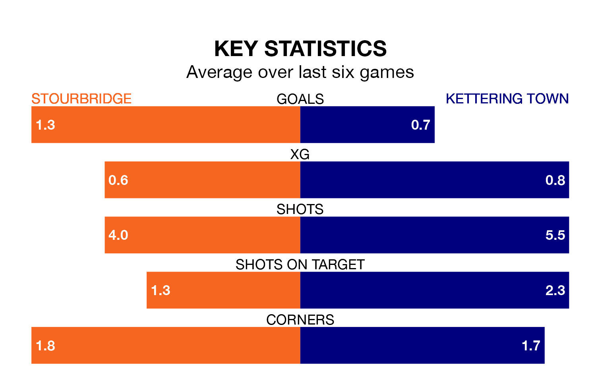

Stourbridge welcome Kettering Town on Saturday looking to pick up points to end their four-game losing streak.
Stourbridge's struggles have left them with just three points from their last six Southern League Premier Central matches, while their opponents have earned four from a possible 18.
Kettering are 19th in the table after 23 games, of which they have won six and drawn five, earning 23 points.
Stourbridge are two places ahead of Town in 17th, with eight wins and three draws putting them on 27 points.
With 31 goals in 23 games so far this season, the Poppies are scoring at below the league average rate with 1.3 goals per game. And they are conceding more than average, letting in 50 goals at a rate of 2.2 per game.
The hosts, meanwhile, are average scorers, with 1.5 goals per game. They have conceded 1.4 goals per game.
Stourbridge's last match was on Tuesday, a 2-1 loss against Mickleover Sports.
Kettering lost 4-0 against Needham Market last time out, on January 6.
Updated: 13:38 (UTC), 10/01/24